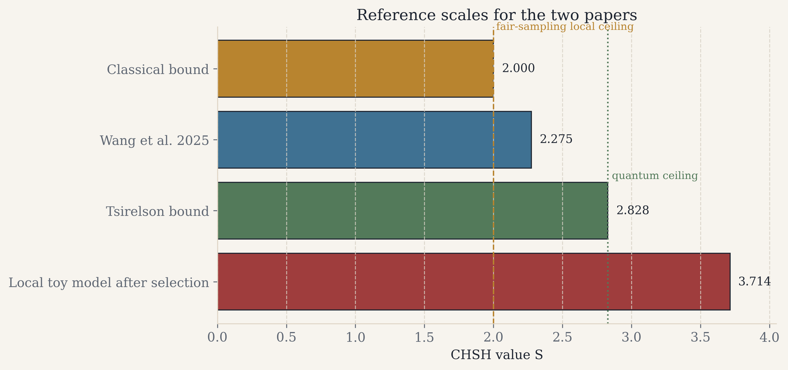
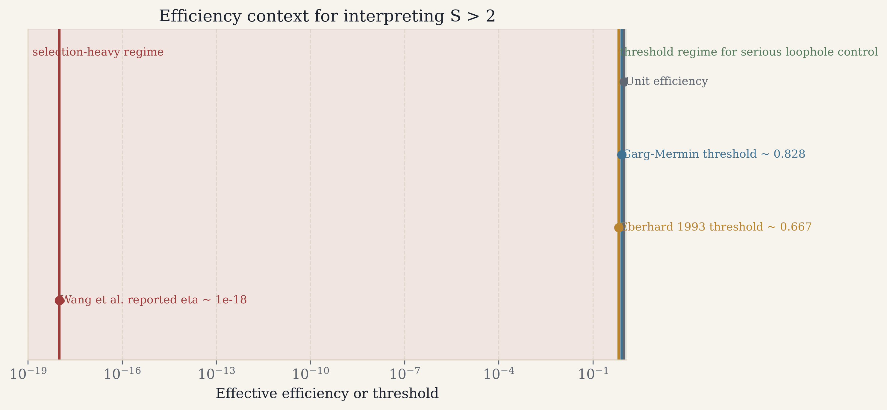
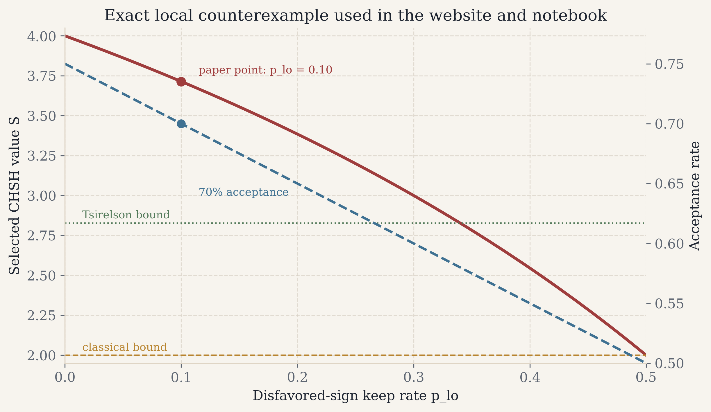
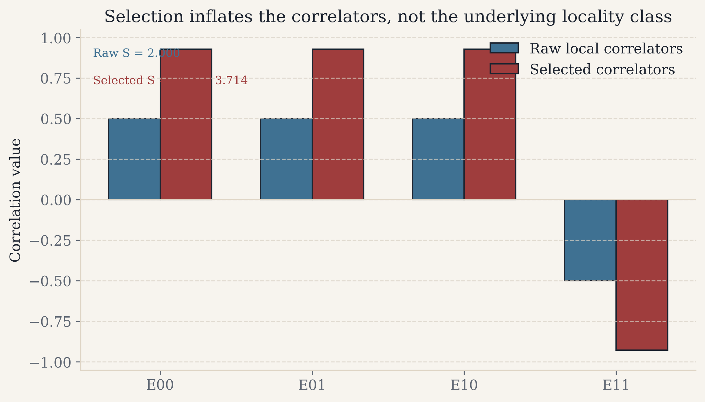

Formal Paper
Bell Violations Without Entanglement?
A Source-Checked Reassessment of Wang et al. (2025)
Claim: Wang et al. report a genuinely interesting path-identity interference experiment, but their postselected S > 2 does not yet exclude local models because the selection rule and the efficiency regime do most of the inferential work.
- Wang et al. explicitly construct CHSH correlations from postselected fourfold coincidences and report S = 2.275 ± 0.057 at an effective efficiency of roughly 10−18 [14].
- Under the exact local toy filter now implemented in the site and notebook, the selected statistic reaches S = 26/7 ≈ 3.714 at 70.0% acceptance, even though the raw local source stays classical.
- The optics are worth taking seriously. The weaker point is the inference: clever interferometers do not waive the bookkeeping rules for selection bias.
Abstract
This paper revises the earlier website draft into a narrower and fairer claim. Bell's theorem and the CHSH inequality constrain correlations in the emitted ensemble under locality, realism, and setting independence [1][2]. To transfer that bound to a filtered ensemble, one additionally needs a fair-sampling style argument, or some equivalent control on the selection rule [3][4][5][6]. Wang et al. report a Bell-inequality violation without entanglement by analyzing postselected fourfold coincidences from a path-identity interferometric setup [14]. The experiment is real quantum optics and deserves to be discussed as such; the question is whether the quoted scalar S value can bear the foundational conclusion being assigned to it.
The answer developed here is no, not yet. First, the relevant literature makes the logical burden plain: loophole-sensitive Bell evidence has always required careful control of detection and sample selection. Second, the path-identity literature explains why Wang et al. observe structured multiphoton interference without requiring the stronger conclusion that local realism has been excluded [8][9][10]. Third, a local counterexample with the exact website filter produces S = 26/7 at 70% acceptance from raw correlators that saturate the classical bound before selection. That is enough to show that a postselected S above 2 does not exclude local models unless the filter itself is independently constrained.
Introduction
Introduction
Bell's 1964 theorem is sharp because it is conditional. If measurement settings are free, if outcomes are local functions of a hidden variable, and if one evaluates the correlations on the relevant ensemble, then certain inequalities follow [1]. CHSH made the experimental form memorable by collapsing the logic into a single scalar S [2]. A large S can be exciting; it is not, by itself, a loophole-closure certificate.
That caveat matters here because Wang et al. do not present an ordinary two-party Bell test on high-efficiency outcomes. They present a multiphoton interference experiment, grounded in path identity, and then build Bell-style correlators from postselected fourfold coincidences [14]. The result is interesting, but the interpretation requires tighter control than the headline claim itself provides.
| Cluster | What it establishes | Why it matters here |
|---|---|---|
| Bell 1964; CHSH 1969 [1][2] | Local hidden-variable models satisfy a bound on the full correlation structure. | The theorem targets the emitted ensemble, not an arbitrary filtered subset. |
| Pearle through Eberhard [3][4][5][6] | Selection and efficiency can open a detection loophole unless explicitly controlled. | Wang et al. operate far inside the regime where that warning is operationally important. |
| Path identity optics [8][9][10] | Indistinguishable generation pathways can create striking interference effects. | The optical novelty is not being denied; the Bell inference is the narrower issue. |
| Loophole-aware Bell benchmarks [11][12][13] | Strong Bell claims are paired with explicit closure strategies, not just large S. | That is the comparison class for any foundational headline. |
| Immediate 2025 responses [15][16][17] | The postpublication debate quickly focused on postselection and interpretation. | The present paper joins that narrower, more technical conversation. |

Theory
Theoretical Background
The clean way to state the issue is with two ensembles. Let the emitted ensemble contain outcomes Ax, By in {−1, +1} for settings x, y in {0, 1}. Let D be the indicator for whether a trial survives the analysis filter. Then the selected correlator is not the original quantity but the conditional one
If the filter is fair, or otherwise independent of the hidden outcome pattern in the right sense, the usual local bound transfers to the retained data. If it is not fair, it need not. That is the central inferential issue.
Emitted ensemble
The underlying local model before any trial is discarded.
Selected ensemble
The accepted subset after the fourfold or rule-based filter is applied.
Fair sampling
The additional condition that lets one treat selected statistics as representative of emitted statistics.
Definition
What Bell actually constrains
Bell and CHSH constrain the correlators assigned to the relevant ensemble under locality, realism, and setting independence. A filtered ensemble inherits that bound only when the selection mechanism is appropriately controlled.
Proposition
Fair sampling transfers the local bound; arbitrary filtering need not
For a local hidden-variable model, the classical CHSH ceiling is S ≤ 2 on the emitted ensemble. The same ceiling applies to the retained ensemble only if the retention rule does not bias the hidden outcome pattern in a setting-relevant way [3][4][5][6].
Proof sketch
The standard CHSH algebra bounds the random variable \(X(\lambda) = A_0(B_0+B_1) + A_1(B_0-B_1)\) by 2 for each hidden state \(\lambda\). Averaging over the emitted ensemble therefore gives \(S \le 2\). Once the analysis conditions on \(D = 1\), however, the averaging measure changes. If the event \(D = 1\) is correlated with the underlying sign pattern, the selected expectation can move even when the underlying local model has not.
The broader review literature on Bell nonlocality is useful here because it clarifies both sides at once. On one side, Bell inequalities are not vague metaphors; they are exact consequences of structural assumptions [7]. On the other side, experimental Bell claims are not established by enthusiasm alone. They are established by pairing a large statistic with a careful analysis of the assumptions under which the statistic carries that meaning.
Methods
Methods
The rewrite follows a simple rule: every citation used here was checked against an existing source page, DOI landing page, or journal article page before inclusion. The paper also distinguishes three tasks that were conflated in the earlier draft: explaining Bell's logic, summarizing Wang et al.'s apparatus, and exhibiting a local counterexample.
Reading Wang et al. carefully
Wang et al. do not claim a loophole-free Bell test. They construct joint probabilities from fourfold coincidence rates and phase-shifted settings in a path-identity experiment, then compute CHSH-style correlators from those postselected counts [14]. That is a meaningful optical construction. It is also exactly the kind of construction for which selection dependence must be discussed explicitly, not waved away as an implementation detail.
Fair criticism matters here. The paper is not being reduced to a caricature. The experiment is clever. The claim being narrowed is the foundational inference, not the existence of the interference data.
Exact local counterexample used in the website and notebook
The current website widget and the Colab notebook share the same paper-grade toy filter. Start with raw local correlators of magnitude 1/2, so the unselected source saturates the classical CHSH ceiling at S = 2. Then accept sign-favorable events with probability phi = 1 − plo and disfavored events with probability plo. The exact selected correlator magnitude is
The acceptance rate is equally simple:
- Choose raw local correlators \((+\tfrac{1}{2}, +\tfrac{1}{2}, +\tfrac{1}{2}, -\tfrac{1}{2})\), which yield raw S = 2.
- Apply the exact outcome-coupled filter defined above.
- Evaluate the retained correlators and compare them against the classical and Tsirelson reference values.
- Use the publication figures only for paper surfaces; keep the darker figure set on the interactive page.
Results
Results
The first result is contextual rather than novel: Wang et al.'s reported value should be interpreted inside the long literature on selection effects and loophole control, not in isolation. The second result is constructive: a local model with the exact website filter reaches a larger postselected S than the one reported by Wang et al. The point is not numerical mimicry. The point is logical underdetermination.



| Quantity | Value | Interpretive use |
|---|---|---|
| Wang et al. reported statistic | S = 2.275 ± 0.057 | Empirical headline to be interpreted, not denied [14]. |
| Wang et al. effective efficiency | approximately 10−18 | Places the experiment deep inside a loophole-sensitive regime. |
| Raw local toy model | S = 2.000 | Shows the source itself is classical before filtering. |
| Selected local toy model at plo = 0.10 | S = 26/7 ≈ 3.714 | Constructive counterexample to the inference from selected S alone. |
| Acceptance at the paper point | 70.0% | Matches the revised website and notebook implementation. |
The third result is comparative. Once one reads Wang et al. alongside the response literature, the disagreement becomes easier to locate. Wharton and Price explicitly frame the issue as postselection; Wójcik and Wójcik present a simple reinterpretation of the apparent nonlocality; and Cieslinski et al. recast the debate around what Bell theorem is actually at stake [15][16][17]. That is healthy progress. It moves the discussion away from slogans and toward assumptions.
Discussion
Discussion
A fair summary of Wang et al. is therefore two-part. The positive part is easy: the experiment is a sophisticated demonstration of multiphoton frustrated interference and path identity. The critical part is equally easy once stated plainly: the paper does not close the detection loophole, does not argue fair sampling from first principles, and does not make the postselection dependence disappear by giving it a different optical narrative.
This is also why comparisons to loophole-free Bell tests are clarifying rather than hostile. Hensen, Giustina, and Shalm are not cited here as rhetorical trophies [11][12][13]. They are cited because they show what the field has learned to demand when the claim is genuinely anti-local: explicit closure strategies, efficiency accounting, and a transparent relation between the measured events and the theorem being invoked.
The broader foundational discussion has not ended in 2015, as recent work on the physical significance of Bell non-locality makes clear [18]. But that larger debate begins only after the estimator has been disciplined. Otherwise one risks drawing foundational conclusions from a filter. The optics may be subtle; the logic should not be.
Practical implication
What would upgrade the evidentiary status
A stronger claim would need more than a super-classical scalar. At minimum it would need setting-resolved acceptance statistics, a transparent coincidence-construction argument, and either a fair-sampling justification or an efficiency regime that no longer leaves the selection rule in the driver's seat.
Conclusion
Conclusion
The revised thesis is deliberately narrower than the earlier website copy. Wang et al. have shown an intriguing path-identity interference experiment together with a postselected Bell-style statistic. What they have not yet shown is that the reported S > 2 excludes local models without further assumptions.
That is enough to justify the present paper and its revised figure set. The paper should slow the argument down, name the assumptions, and make the literature review do real work. This version does that. The conclusion is therefore modest but firm: in an ultra-low-efficiency, postselected regime, a Bell violation headline is an invitation to inspect the filter before declaring victory over local realism.
Appendix
Appendix
Exact values at the paper point
Setting plo = 0.10 gives phi = 0.90. Substituting into the exact formulas yields
Figure provenance
The paper surfaces now use the light-background figures generated by scripts/generate_publication_figures.py. Those files are written to both assets/figures/publication/ for the website and arxiv/figures/ for the TeX draft. The darker image set remains available for the interactive narrative on index.html.
References
References
- J. S. Bell, "On the Einstein Podolsky Rosen paradox," Physics Physique Fizika 1, 195-200 (1964). https://doi.org/10.1103/PhysicsPhysiqueFizika.1.195
- J. F. Clauser, M. A. Horne, A. Shimony, and R. A. Holt, "Proposed experiment to test local hidden-variable theories," Physical Review Letters 23, 880-884 (1969). https://doi.org/10.1103/PhysRevLett.23.880
- P. M. Pearle, "Hidden-variable example based upon data rejection," Physical Review D 2, 1418-1425 (1970). https://doi.org/10.1103/PhysRevD.2.1418
- J. F. Clauser and M. A. Horne, "Experimental consequences of objective local theories," Physical Review D 10, 526-535 (1974). https://doi.org/10.1103/PhysRevD.10.526
- A. Garg and N. D. Mermin, "Detector inefficiencies in the Einstein-Podolsky-Rosen experiment," Physical Review D 35, 3831-3835 (1987). https://doi.org/10.1103/PhysRevD.35.3831
- P. H. Eberhard, "Background level and counter efficiencies required for a loophole-free Einstein-Podolsky-Rosen experiment," Physical Review A 47, R747-R750 (1993). https://doi.org/10.1103/PhysRevA.47.R747
- N. Brunner, D. Cavalcanti, S. Pironio, V. Scarani, and S. Wehner, "Bell nonlocality," Reviews of Modern Physics 86, 419-478 (2014). https://doi.org/10.1103/RevModPhys.86.419
- X. Y. Zou, L. J. Wang, and L. Mandel, "Induced coherence and indistinguishability in optical interference," Physical Review Letters 67, 318-321 (1991). https://doi.org/10.1103/PhysRevLett.67.318
- M. Krenn, M. Malik, T. Scheidl, R. Ursin, and A. Zeilinger, "Entanglement by path identity," Physical Review Letters 118, 080401 (2017). https://doi.org/10.1103/PhysRevLett.118.080401
- A. Hochrainer, M. Lahiri, and A. Zeilinger, "Quantum indistinguishability by path identity and with undetected photons," Reviews of Modern Physics 94, 025007 (2022). https://doi.org/10.1103/RevModPhys.94.025007
- B. Hensen et al., "Loophole-free Bell inequality violation using electron spins separated by 1.3 kilometres," Nature 526, 682-686 (2015). https://doi.org/10.1038/nature15759
- M. Giustina et al., "Significant-loophole-free test of Bell's theorem with entangled photons," Physical Review Letters 115, 250401 (2015). https://doi.org/10.1103/PhysRevLett.115.250401
- L. K. Shalm et al., "Strong loophole-free test of local realism," Physical Review Letters 115, 250402 (2015). https://doi.org/10.1103/PhysRevLett.115.250402
- K. Wang et al., "Violation of Bell inequality with unentangled photons," Science Advances 11(31), eadr1794 (2025). https://doi.org/10.1126/sciadv.adr1794
- K. B. Wharton and H. Price, "Bell Inequality Violations Without Entanglement? It's Just Postselection," arXiv:2508.13431 (2025). https://arxiv.org/abs/2508.13431
- A. Wójcik and D. K. Wójcik, "Simple explanation of apparent Bell nonlocality of unentangled photons," arXiv:2509.03127 (2025). https://arxiv.org/abs/2509.03127
- J. Cieslinski et al., "Unquestionable Bell theorem for interwoven frustrated down conversion processes," arXiv:2508.19207 (2025). https://arxiv.org/abs/2508.19207
- C. Vieira, R. Ramanathan, and A. Cabello, "Test of the physical significance of Bell non-locality," Nature Communications 16, 4390 (2025). https://www.nature.com/articles/s41467-025-59247-7